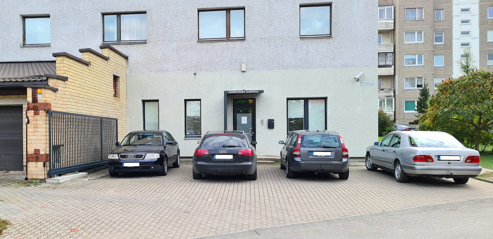

Ginekologo konsultacija ir ligų gydymas
Individuali konsultacija, apžiūra, ginekologinių ligų diagnostika ir gydymas. Laikas Jūsų sveikatos klausimams.
Privati vienos gydytojos praktika
Jus priima pati gydytoja akušerė-ginekologė G. Karpenko.
Klinikoje dirba viena gydytoja – G. Karpenko, privačia praktika užsiimanti nuo 1997 metų. Ji pati konsultuoja pacientes, atlieka apžiūras ir tyrimus bei rūpinasi tolesne priežiūra.
Čia iš anksto žinote, pas kokią gydytoją atvykstate. G. Karpenko skiria laiko Jus išklausyti, atsakyti į rūpimus klausimus ir ramiai aptarti Jūsų sveikatą.
Dėl vizito susisiekite telefonu »
Viena gydytoja. Ilgametė patirtis. Asmeninis dėmesys.
Akušerija ir ginekologija
Individuali konsultacija, apžiūra, ginekologinių ligų diagnostika ir gydymas. Laikas Jūsų sveikatos klausimams.
Ultragarsinis tyrimas kaip ginekologinio ištyrimo dalis. Sužinokite apie tyrimą ir pasiruošimą vizitui.
Ankstyvas nėštumo nustatymas, nėščiųjų priežiūra, vaisiaus stebėjimas ir tyrimai nėštumo metu.
Hormoninių ir nehormoninių kontracepcijos būdų parinkimas, atsižvelgiant į sveikatos istoriją ir individualius poreikius.
Profilaktinė apžiūra, krūties ir gimdos kaklelio vėžio prevencijos klausimai bei individuali sveikatos priežiūra.
G. Karpenko klinika Vilniuje
G. Karpenko privati akušerijos
ir ginekologijos klinika
Su pagarba ir rūpesčiu – Jūsų sveikatai.